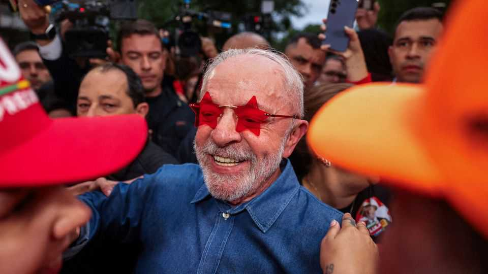

Markets are dismayed by Lula’s surprise win—and for good reason
The pressure is on Brazil’s re-elected president to avoid an economic slump

Oct 29th 2026
LULA WAS a goner—or at least that is what everyone had assumed. Instead, Luiz Inácio Lula da Silva, Brazil’s incumbent president, pulled off a win for the history books. The left-wing leader hung on to his job by a clear margin of nearly four percentage points in a presidential run-off on October 25th, even though he had trailed his rival, Flávio Bolsonaro, in the first round of voting three weeks earlier. Never in Brazilian history has anyone come from behind in this way to clinch the presidency. In January Lula will become the country’s first democratically elected president to start a fourth term.
Yet if Lula’s supporters are elated, others are running scared. One was Flávio, who has sought sanctuary in the United States, claiming emptily to be the ballot’s real victor. For some time investigators have been examining his ties with a businessman accused of laundering vast sums of money (both deny any wrongdoing). The day after the election, the Supreme Court judge who is handling that case required him to surrender his passports. Instead of doing that, Flávio ran away.
More significant, investors are fleeing Brazil, too. Markets rightly fear economic drift and high-spending that Brazil cannot afford. The real slumped by 8% against the dollar the day after the election result, the worst one-day fall in over 25 years. The main stock-market index, the Bovespa, closed 14% lower, having tripped a circuit-breaker on the way down. If Lula wants to lift up poor Brazilians, avoid a crisis and protect his legacy, his final four years in office will have to look very different from the past four. That starts with him persuading investors that he means to change course.
Investors had wanted Flávio to win in large part because they trust his opponent even less. For years, successive governments, including Lula’s, have spent wildly. That has forced the central bank to hike the real interest rate, now at 9%. Brazil pays a larger share of GDP in interest on its debt than all but a tiny handful of big countries. All this weighs on investment, squeezes businesses and households, and squashes growth. Though Brazil has natural resources, including oil, extensive farmlands and huge stocks of critical minerals, it has for decades grown more slowly than its peers.
Cutting government spending is key to getting things moving. Lula’s government runs a budget deficit of more than 9% of GDP. The IMF predicts that public debt will hit 97% of GDP this year, up from 84% in 2022. If Lula is to change his ways, he must first disavow talk from the campaign trail on which he dismissed the need for fiscal discipline. He also promised big new bungs. Expenses arising from new social policies that Lula has unveiled this year are likely to cost the government the equivalent of roughly 2% of GDP by the end of 2027.
Lula, who turned 81 on October 27th, has harnessed admirable energy in the weeks since the first round of voting humbled him. He regrouped his campaign and changed his strategy. Now he needs to muster the same vim to relaunch his programme of government. He should make a start by naming a finance minister whom investors will trust. He must then announce a credible plan for fiscal reform.
An urgent task is to pass a spending cap to stabilise Brazil’s debt. Lula needs to scrap the many tax breaks that have proliferated and which benefit inefficient firms with well-connected lobbyists. Brazilian spending is swelling in part because of cushy pensions, particularly for civil servants and the armed forces, which are rising faster than inflation.
In his next term Lula will be able to fill an unusual number of vacancies, including two members of the Central Bank’s board and positions on Brazil’s financial watchdog. Especially important are the four seats on the Supreme Court, which is politicised and plagued by allegations of corruption.
Little of this will be easy—which is why the markets have panicked. However, if Brazil’s re-elected president believes that his election victory is an excuse to double down on the policies that saw off Flávio, he will cause a fiscal crisis and a deep recession. His golden victory will turn to ashes. ■